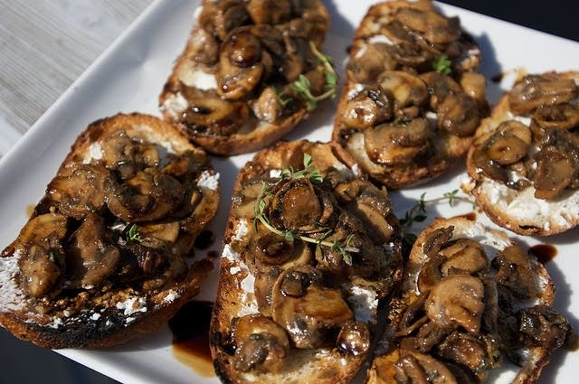

Wild Mushroom Bruschetta

A delightful and savory appetizer.
Ingredients
- 1 lb. portabello mushrooms
- ½ lb. oyster mushrooms
- ½ lb. domestic mushrooms
- 2 oz. garlic, minced
- 2 tablespoons fresh basil, minced
- 1 tablespoon fresh oregano, minced
- salt and pepper to taste
- enough extra virgin olive oil to coat
- 4-5 fl. oz. balsamic vinegar
- enough french bread to satisfy
Directions
- Marinate portabello mushrooms in balsamic vinegar
- Grill portabellos, dice, and chill
- Slice oyster and domestic mushrooms, slightly cook, and chill
- Combine all ingredients and serve with fresh cut french bread